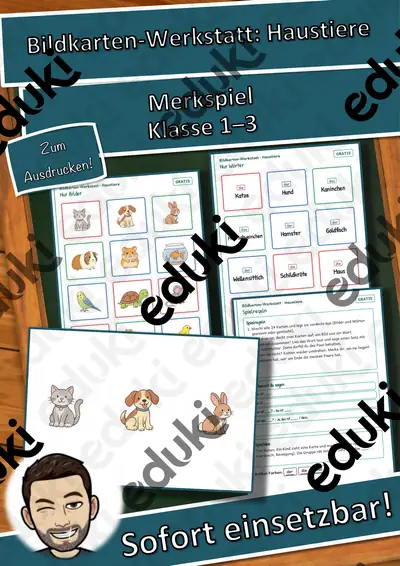
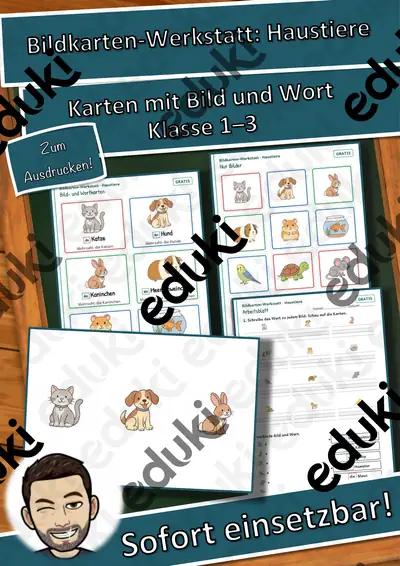
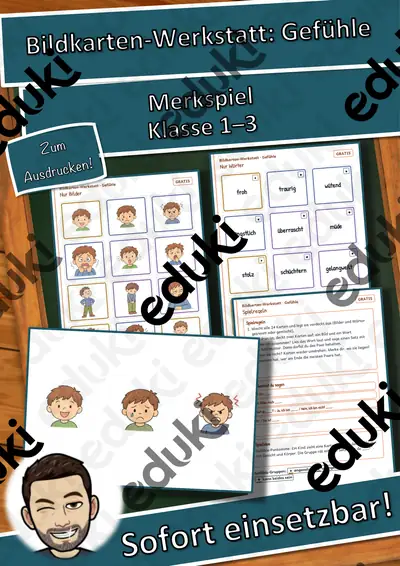
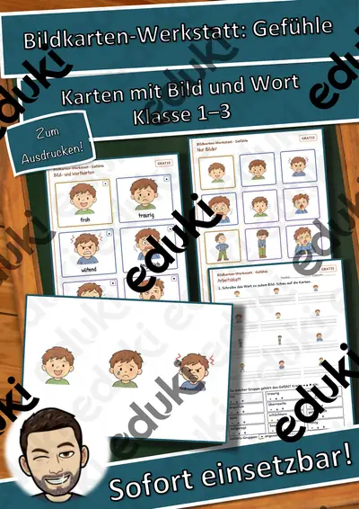
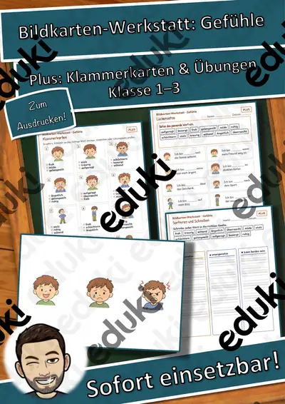
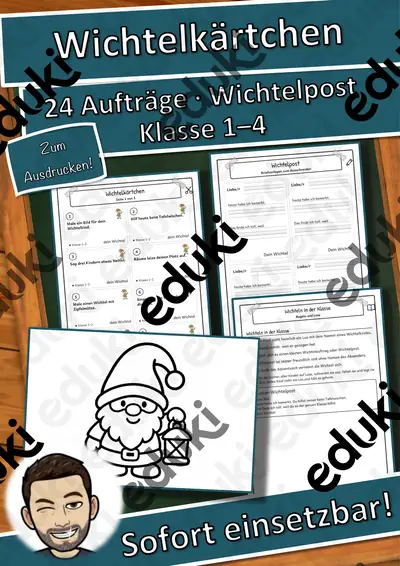
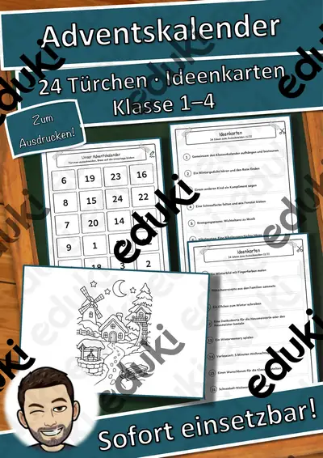

Logicals „Wer ist wer?“ im Winter: 11 Logikrätsel in 3 Stufen mit Kreuztabelle und Lösungen (Klasse 2–4)
Wer trägt die rote Mütze, wer fährt Ski, wer trinkt Kakao? In 11 Winter-Logicals ordnen die Kinder durch genaues Lesen und Nachdenken zu, wer was hat. Alle Rätsel wurden per Programm geprüft: jedes hat genau eine Lösung, und jeder Hinweis wird gebraucht – kein Raten, nur Denken.
Dreifach differenziert:
- ★ 3 Kinder, 2 Sorten, 3–5 Hinweise (4 Rätsel)
- ★★ 4 Kinder, 2 Sorten, Hinweise auch mit „nicht“ (4 Rätsel)
- ★★★ 4–5 Kinder, bis zu 3 Sorten, bis zu 10 Hinweise (3 Knobelaufgaben)Inhalt (14 Seiten inkl. Deckblatt):
- Einführung mit Beispiel: So knackst du ein Logical (Schritt für Schritt), Übung „Hinweise in Zeichen verwandeln“
- 11 Logicals mit Hinweisliste, Kreuztabelle und Lösungstabelle (Symbole und Farben statt Fotos)
- Schreibwerkstatt „Mein eigenes Logical“ mit Eindeutigkeits-Test
- Ich-kann-Check, Lösungen aller Logicals als Tabellen, Lehrkraftseite
Einsatz: Deutsch/Mathematik Klasse 2–4 (Leseverstehen, logisches Denken), Begabtenförderung, Freiarbeit, Vertretungsstunde. Dauer 10–20 Minuten je Logical.
Teil der Reihe „Winter-Rätselwerkstatt“ (3 Materialien: Wer bin ich? · Krimi-Rätselheft · Logicals „Wer ist wer?“) – im Paket günstiger.
Rätsel, Aufgaben und Layout eigene Erstellung. Symbole aus der freien Schrift Noto Color Emoji (SIL OFL), keine Fotos, keine realen Personen, keine Marken. Texte mit KI-Unterstützung erstellt und geprüft.
Viel Freude beim Raten, Lesen und Knobeln wünscht Snice! :)
Ähnliche Materialien

Bildkarten-Werkstatt: Haustiere – Merkspiel mit Bild- und Wortkarten (GRATIS), Klasse 1–3

Bildkarten-Werkstatt: Haustiere – Bild- und Wortkarten, Satzmuster, Spiel (GRATIS), Klasse 1–3

Bildkarten-Werkstatt: Gefühle – Merkspiel mit Bild- und Wortkarten (GRATIS), Klasse 1–3

Bildkarten-Werkstatt: Gefühle – Bild- und Wortkarten, Satzmuster, Spiel (GRATIS), Klasse 1–3

Bildkarten-Werkstatt: Haustiere PLUS – Klammerkarten, Lückensätze, Lernkontrolle, Klasse 1–3

Wichtelkärtchen: 24 Wichtelaufträge, Wichtelpost und Lose für die Klasse (Klasse 1–4)

Weihnachtsgeschichte als Domino: Religion in 2 Varianten mit Stichwörtern und Sätzen (Klasse 2–4)
